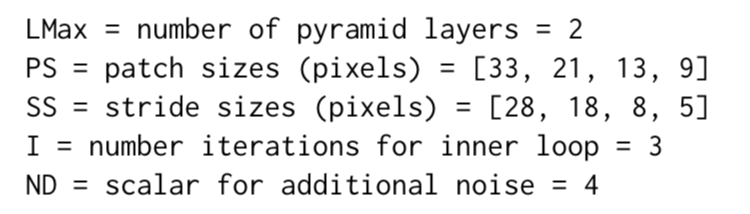
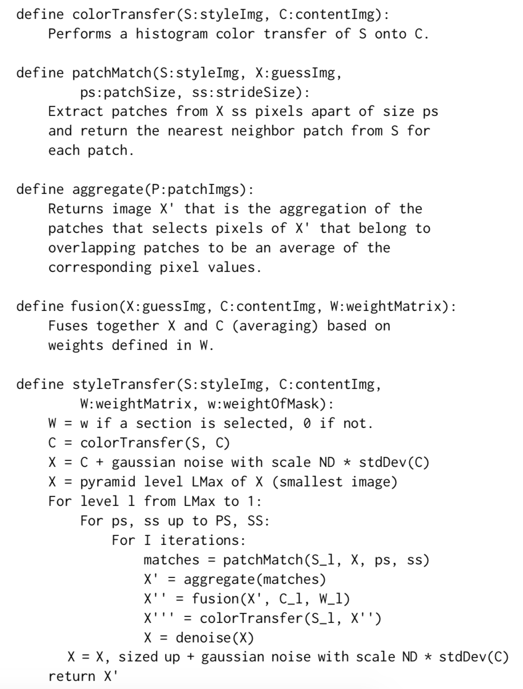

While recent work in the style transfer community has focused on using neural network based strategies, we turn back to classic texture synthesis algorithms to perform style transfer, mainly based off the work of Elad and Manifar[1]. We propose a series of modifications that allow for more artistic style transfer to represent the desired content. We also extend the algorithm to synthesize paintings from untrained user drawings based off a given style.
In recent years, using machine learning to perform style transfer has been a hit in the computer science community, mainly focused around using convolutional neural networks that require significant training time and often lack capabilities for reuse on new styles. For our work, we decided to take a more straightforward approach, based off the large body of texture synthesis work. Our texture synthesis approach allows us to directly tailor the algorithm to better transfer artistic styles to content images, and takes in arbitrary style and content images for maximum applicability.
OOur method of style transfer is based on Elad and Manifar[1]'s previous work which is an extension of texture synthesis while injecting priors about a content image. We take in as inputs a content image and a style image, and our goal is to create a stylized content image (which we will refer to as a "guess") based on the color and structure of the content image with the style of the style image. We do this iteratively, by initializing our guess image as a color-transformed version of the content image, then obtaining patches from our style image that closely match our content image, aggregating these patches together, blending the content image with the aggregated patches, color transferring from our style image to the guess, and then denoising the guess. We do this process repeatedly over multiple pyramid levels and patch sizes to obtain a finalized result. This will result in a guess image that approximately minimizes the L2 distance between each patch in the guess image and a patch in the style image and the L2 distance between between the guess image and the content image.
First, we begin each iteration of our algorithm by finding fixed size patches from the style image that most closely match patches of the same size of our guess image. We iterate through our entire guess image with a fixed stride length and extract a patch at that neighborhood. We then find the patch in the style image that most closely matches the guess image path (with the minimum L2 distance).
Elad and Manifar[1] suggested using PCA decomposition on the zero-meaned patches to pre-process them and compress them for faster matching (while still using the original patches after matching). This did give us a 3x speedup, but we found the results of this to be unsatisfactory. Zero-meaning the patches caused patches of incorrect colors to be matched to the guess image patches. Just using PCA without zero-meaning caused us to lose some detail that made matches inferior, as shown in the figure below. Instead, we did not pre-process the patches with any transformations and used a simple match based on minimizing L2 distance.
After we find nearest neighbors for every patch, we now need to assign every pixel in our guess image some pixel value derived from the patches. During setup, we intentionally allowed for patch overlap in order to allow smoother boundaries between patches. Thus, some pixels in the guess image will be associated with multiple patches, and will need to be given a value based on all of the overlapping patches. Kwatra et. al.[2] found a need to use robust aggregation techniques for pixel assignment, in order to perform outlier rejection. Namely, they attempt to minimize the sum of the differences between the assigned color value and patch color values to the power of r = 0.8. Thus, outlier assignments are weighted less than normal.
In our experiments, we found that robust aggregation was not optimal for artistic style transfer. The outliers are essential for abrupt changes that might lie in some style - we found that robust aggregation often lead to blurred out images that didn't capture the unique features of the style image, as shown below. Instead, we used r = 2, which simply devolves into taking an image between all pixel guesses. We get much better, more distinct results that we will display later.
In Elad and Manifar[1], there is an additional content fusion step in order to try and minimize the difference between the content image and the output guess image. They simply take a weighted average between these two images for the minimization, based on some given segmentation mask/weight matrix. Their parameters often resulted in very heavy emphasis on the content image, which results in an output image with very jarring photorealistic elements that overpower artistic style. In order to solve this problem, we take a much more conservative approach, where we minimally weight the content image in order to guide the guess image towards an overall structure that resembles the content image. Our results are much more aesthetically pleasing, more accurately matching the style image. For our results, we also sometimes skip content fusion on the highest resolution at the last iteration, in order to preserve artistic style.
Elad and Manifar[1] suggest color-transferring the style image's color to the guess image, which we do with histogram matching which leads to visually pleasing results. We perform a color transfer at the very beginning on our initialized guess image, and then every time after content fusion. Thus, our algorithm can handle pairs of content and style images with different color palettes.
We used the values:
Input images were approximately 400px x 400px, maintaining their original aspect ratio.
The pseudocode for our algorithm is as follows:
While we originally returned the full sized X image in the end, we saw that X' would contain better results due to the fusion step typically blending in too much of the content image's features that overshadowed artistic effects.
Content images appear first, style images second, and final product third.
We also tried transferring the style of one painting onto another. As in the previous section, content images appear on the upper left, style images on the upper right, and final product on the bottom.
As an extension of our algorithm, we applied it with some modifications to generating paintings from a given painting style image and a user supplied attempt. We use this attempt to effectively guide the algorithm, but at the same time avoid too much input. Thus, we use an even smaller weight during content fusion in order to minimize the impact of the user supplied attempt, which is most likely much poorer quality than the desired style. We also avoid color transfer in order to ensure that colors in the user's drawing roughly match up with the output image. Finally, we output only the final aggregated image, to again ensure that the user attempt does not yield incorrect colors. We see examples below, with excellent results.
As our above work as shown, a texture-synthesis approach to style transfer is certainly feasible for high quality results. Additionally, with only easy modifications our algorithm also handles artistic generation utilizing very simple user drawings. Many improvements are certainly still possible:
REFERENCES
[1] Michael Elad and Peyman Milanfar. 2017. Style Transfer Via Texture Synthesis. Trans. Img. Proc. 26, 5 (May 2017), 2338–2351. https://doi.org/10.1109/TIP.2017. 2678168
[2] Vivek Kwatra, Irfan Essa, Aaron Bobick, and Nipun Kwatra. 2005. Texture Opti- mization for Example-based Synthesis. ACM Transactions on Graphics, SIGGRAPH 2005 (August 2005).